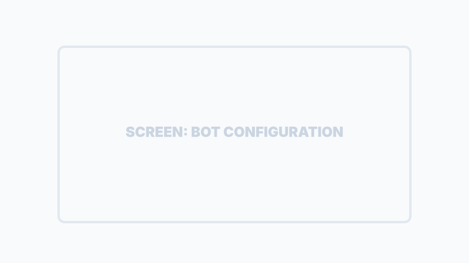

Configurazione Iniziale (Onboarding)
L'attivazione di SiTeBoS richiede tre passaggi fondamentali per allineare l'identità del business, la potenza di calcolo AI e l'interfaccia di comunicazione.
Step 1: Profilo Aziendale
Il sistema necessita dei dati fiscali e di contatto per personalizzare i documenti generati (come il Minisito) e per la gestione della fatturazione interna.
Dati da inserire:
- Identità Fiscale: Ragione Sociale, P.IVA, Codice Fiscale.
- Recapiti: Email, Telefono, Indirizzo Sede.
- Canali Social: Link a LinkedIn, Facebook e Instagram per l'integrazione marketing.
Step 2: Collegamento Motori AI
SiTeBoS utilizza il modello Google Gemini per elaborare le informazioni. Per mantenere la sovranità dei dati e il controllo dei costi, devi inserire la tua API Key personale.
Nota Tecnica sulle API
Il sistema valida istantaneamente se la chiave è in "Paid Tier" (fatturazione attiva) o "Free Tier". L'uso di una chiave Paid è fortemente raccomandato per evitare limiti di velocità nelle risposte del bot.
Step 3: Attivazione Bot Telegram
Il Bot Telegram è il "volto" della tua azienda. È necessario associare un bot dedicato che fungerà da interfaccia per i tuoi clienti.
Crea il Bot
Contatta @BotFather su Telegram, crea un nuovo bot e ottieni il API Token.
Configura la Personalità
Inserisci il nome dell'agente, il ruolo e le istruzioni custom per definire come il bot deve interagire con i tuoi clienti.

Configurazione Avanzata (Setup Avanzato)
Accessibile dall'Identity Hub selezionando la voce ⚙️ Parametri Avanzati, il Setup Avanzato è la procedura guidata a 3 fasi che allinea la struttura operativa (staff e asset) con i dati economico-finanziari dell'azienda. Il sistema adatta automaticamente l'interfaccia in base al verticale dell'azienda (es. Generico Aziendale o Odontoiatrico).
Fase 1: Staff e Collaboratori
Consente di mappare l'intero organico dello studio o dell'azienda. Il sistema supporta l'inserimento sia di dipendenti subordinati (CCNL) che di consulenti esterni (P.IVA):
- Titolare (Owner): Sempre fissato in cima alla lista con l'icona , i cui dati di inquadramento possono essere modificati ma che è protetto dalla cancellazione.
- Calcolo Retribuzioni Dipendenti: Calcola automaticamente la retribuzione lorda mensile basandosi sul livello di inquadramento CCNL selezionato e le ore settimanali, con possibilità di override manuale del salario.
- Conformità Contrattuale (Verticale Clinico): Per il settore dentale, applica controlli reattivi obbligatori (ad esempio, forzando il contratto CCNL dipendente per le ASO e le Segretarie).
- Inviti Telegram: Permette di generare un link univoco di invito per ciascun operatore dello staff per connettere il proprio account Telegram (costo di 20 Crediti ad attivazione confermata). Se l'invito è in attesa (PENDING), è possibile copiare il link esistente gratuitamente.
Fase 2: Postazioni Operative e Attrezzature
Mappa la capacità produttiva fisica e gli asset strumentali dell'azienda:
- Postazioni Operative: Impostazione della capacità tramite uno stepper compatto (es. "Sale Operatorie Attive" o "Postazioni di Lavoro"). Al variare del numero, il sistema ridimensiona automaticamente le attrezzature base collegate.
- Preset Autocomplete Combobox: Un menu a tendina intelligente con ricerca integrata, diviso per categorie, per aggiungere asset come server, PC, riuniti o licenze software. Popola automaticamente il prezzo d'acquisto medio e la vita utile.
- Leasing e Noleggio: Calcola una stima del canone mensile pari all'1.5% del valore dell'asset. Il passaggio a "Proprietà" ripristina all'istante il prezzo originale.
- Validazione Requisiti: Blocca il passaggio alla Fase 3 se non è presente almeno una postazione operativa attiva o un asset fondamentale (es. un computer per le aziende o un riunito per gli studi dentistici).
Fase 3: Scomposizione Finanziaria (Bilancio)
L'ultimo step allinea i conti economici reali dell'azienda per calcolare i margini e il costo orario delle postazioni:
- Scenario per Regime Forfettario: I liberi professionisti in regime forfettario possono attivare un check dedicato che nasconde la scomposizione e abilita direttamente il salvataggio dei parametri.
- Caricamento Bilancio: Supporta l'upload in PDF/Immagine del Bilancio CEE (Società di Capitali), del Modello Redditi SP (Società di Persone) o del Quadro RE (Professionisti in regime ordinario). Se il bilancio è già elaborato sul server (api_balance presente), il pulsante di scomposizione si sblocca all'istante.
- Compilazione Manuale: Se l'utente sceglie di inserire i dati manualmente, viene mostrata la griglia completa dei conti (COGS, stipendi, locazioni, utenze, ammortamenti) con tooltip esplicativi. Il pulsante "Salva Configurazione" si abilita solo quando tutti i campi obbligatori sono compilati con valori superiori a zero.
Rilevamento Dati Obsoleti (Stale Data Warning)
Il sistema salva uno snapshot crittografico dello staff e delle attrezzature al momento della scomposizione economica. Se successivamente l'utente torna indietro alla Fase 1 o 2 per aggiungere o eliminare operatori o asset, nella Fase 3 comparirà un banner di avviso "Configurazione Rilevata Obsoleta" ed il pulsante "Ricalcola Scomposizione" per aggiornare i calcoli AI con i dati correnti.
Il Centro di Controllo (Supervisor Hub)
Una volta completata la configurazione, il titolare ha accesso al Supervisor Hub direttamente su Telegram. Questa è la console di comando principale da cui monitorare l'intera intelligenza aziendale.
Monitoraggio & AI
- 🛡️ Hub Supervisor: Stato generale del sistema.
- 📊 Intelligence: Analisi dati e reportistica AI.
- 🔄 Sync: Sincronizzazione flussi e database.
Gestione Operativa
- 👥 Team Manager: Gestione operatori e task.
- 📋 Catalogo & Procedure: Procedure e listini.
- ⌛ Logistica: Gestione tempi e percorsi.

Nota: La tastiera del Supervisor Hub è dinamica e si adatta in base ai moduli attivati e ai permessi dell'utente.